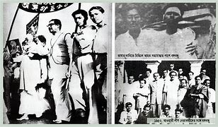
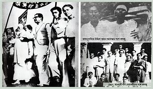
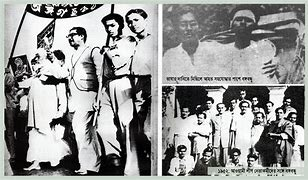
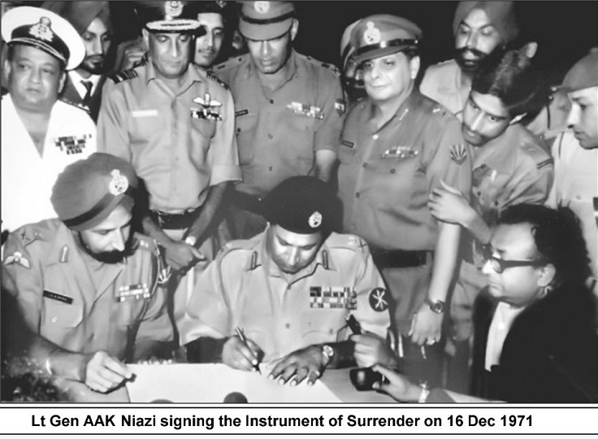
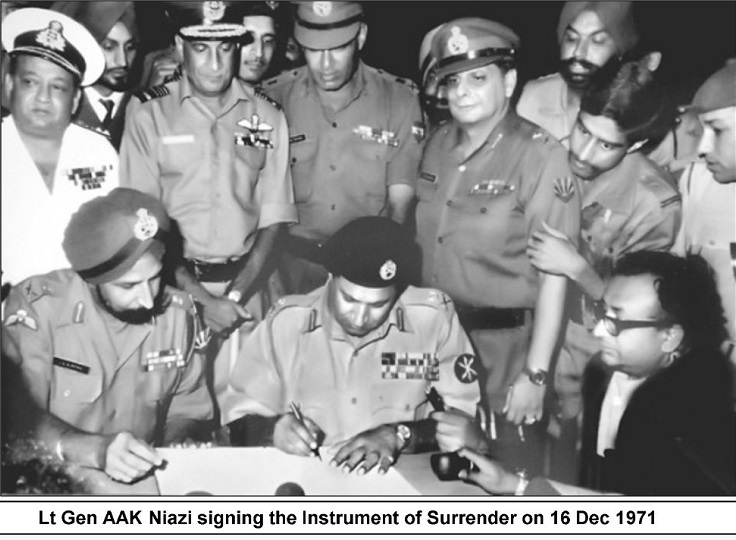

Bangladesh is a independent country now.But this freedom didn't came at a cheap price.Bangladeshi people had protest and lose they life's against the west pakistan in order to independent Bangladesh.
After the world war II British were pressured to reduce size of their empire.Lord Mountbatten and Mahatma Gandhi worked together to combine Hindus and Muslims.But they were unsuccessful.Lord Mountbatten decided to partition British India.In july 1947 united kingdom declareed two separate states Pakistan and India.pakistan was the Muslim state and India was the Hindu state.
In 1948 Government of Pakistan declared Urdu as state language • Protests sparked among Bengali speaking East Pakistanis. • In 1952 the protests reached its peak. • Due to massive unrest the government outlawed meetings and rallies. • The students of the University of Dhaka and several other political groups defied the laws and organized protests on 21 February 1952. • When the protests reached its climax the police open fired and killed several students. • Massive civil unrest broke out due to those killings • Finally after years of conflict the central government granted official status of Bengali language in 1956. • 21 Februar y is now observed as the “International Mother Language Day” in the whole world and this was granted by UNESCO in 2000
• The United Front of Awami League and the Krishak Sramik Party won the most of the seats in the East Bengal Legislative Assembly. Sheikh Mujib was elected in this assembly and serving briefly as the minister for agriculture. Muslim League got only 9 seats out of 310. 1954 May 30: • .The Bengali dominated United Front Government had been deposed by the Governor General of Pakistan, Ghulam Mohammad. The Governor General imposed his direct rule in East Pakistan
1.The constitution should provide for a Federation of Pakistan in its true sense based on the Lahore Resolution and the parliamentary form of government with supremacy of a Legislature directly elected on the basis of universal adult franchise. • 2. The federal government should deal with only two subjects: Defence and Foreign Affairs, and all other residual subjects should be vested in the federating states. • 3. Two separate, but freely convertible currencies for two wings should be introduced; or if this is not feasible, there should be one currency for the whole country, but effective constitutional provisions should be • introduced to stop the flight of capital from East to West Pakistan. Furthermore, a separate Banking Reserve should be established and separate fiscal and monetary policy be adopted for East Pakistan. • 4. The power of taxation and revenue collection should be vested in the federating units and the federal centre would have no such power. The federation would be entitled to a share in the state taxes to meet its expenditures. • 5. There should be two separate accounts for the foreign exchange earnings of the two wings; the foreign exchange requirements of the federal government should be met by the two wings equally or in a ratio to be fixed; indigenous products should move free of duty between the two wings, and the constitution should empower the units to establish trade links with foreign countries. • 6. East Pakistan should have a separate militia or paramilitary force.

The election was held on 7 December 1970. The total voters were 29,479,386 and the casting votes were 17,005,163 (57.68%), the valid casting votes were 16,454,278.
Call for Independence As the capital was located in West Pakistan , the East Pakistan was unfairly ruled. •Very little was spent on the development of East Pakistan. •Protests continued and martial law was imposed. •Finally after several years of political unrest the first election of Pakistan in 7 December 1970 was called. •Awami League, the political party won all the seats in East Pakistan. •West Pakistan opened talks with East Pakistan over division of power between the central governments. •Talks proved to be unsuccessful and the President of Pakistan refused to let Awami League form government. •On March 2, 1971, a group of students, led by A S M Abdur Rob, student leader & VP of DUCSU (Dhaka University Central Students Union) raised the new (proposed) flag of Bangladesh under the direction of Swadhin Bangla Nucleus. •On 7 March 1971 Sheikh Mujibur Rahman, made his historic freedom speech, which called for the revolution for freedom and liberation.
The war for Independence On 25 March 1971 the Pakistan army launched“Operation Searchlight” which killed thousands of innocent unarmed Bangladeshis. • This led to the formation of Mukti Bahini which fought for independence. • Many battles took place in different parts of East Pakistan. • Over nine months of bloodiest war an estimated 3 millions Bangladeshis were killed. • Women and children were tortured and murdered. .Two days before independence the Pakistan army captured many physicians, professors, writers and engineers in Dhaka, and murdered them, leaving the dead bodies in a mass grave. • Finally in 16 December 1971 the Pakistan army signed the “Instrument of Surrender” and Bangladesh officially came into existence as the 139th country of the world. 13. The mujibnagar goverment • district. A 1.As the Pakistan military force started genocide on 25 March of 1971, the people of East Pakistan posed resistance against them initially 2.without any preparation and organizational movement. In order to administer the liberation 3.war efficiently the first provisional government of Bangladesh was formed on 10 April. The formal swearing in ceremony was held on 17 April at Vaidynathtala in Meherpur district.
Pakistan army surrendered on 16th December, 1971 • Within 13 days, Pakistan army had been defeated on the both sides of Indian borders. In Bangladesh front Pakistan army surrendered on 16th December, 1971; and the nation of Bangladesh ("Country of Bengal") was finally established on the following day
 
